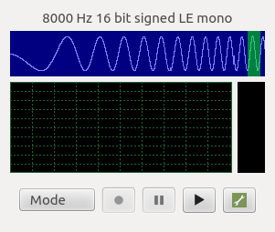

Spectrum Example
The Spectrum Example uses a combination multimedia APIs to process microphone input.
The Spectrum Analyzer example shows how the Qt Multimedia module can be used to record and then play back an audio stream.

Because Qt Multimedia allows the application to access the raw audio stream, the data can either be inspected or modified by the application. The Spectrum Analyzer example displays three pieces of information while audio is being either captured or played back:
- Information about the raw audio stream, shown in the uppermost widget:
- The amount of data currently in the buffer, shown in blue
- The segment of data which was most recently analysed to compute the frequency spectrum, shown in green
- The raw audio waveform, shown in white and scrolling from right to left
- A representation of the frequency spectrum, shown at the lower left
- The current RMS level of the audio stream, and the recent 'high watermark' level, shown at the lower right
Spectrum analysis is performed by calculating the Fast Fourier Transform (FFT) of a segment of audio data. An open-source library, FFTReal, against which the application is dynamically linked, is used to compute the transform.
Files:
- multimedia/spectrum/3rdparty/fftreal/Array.h
- multimedia/spectrum/3rdparty/fftreal/DynArray.h
- multimedia/spectrum/3rdparty/fftreal/FFTReal.h
- multimedia/spectrum/3rdparty/fftreal/FFTRealFixLen.h
- multimedia/spectrum/3rdparty/fftreal/FFTRealFixLenParam.h
- multimedia/spectrum/3rdparty/fftreal/FFTRealPassDirect.h
- multimedia/spectrum/3rdparty/fftreal/FFTRealPassInverse.h
- multimedia/spectrum/3rdparty/fftreal/FFTRealSelect.h
- multimedia/spectrum/3rdparty/fftreal/FFTRealUseTrigo.h
- multimedia/spectrum/3rdparty/fftreal/OscSinCos.h
- multimedia/spectrum/3rdparty/fftreal/TestAccuracy.h
- multimedia/spectrum/3rdparty/fftreal/TestHelperFixLen.h
- multimedia/spectrum/3rdparty/fftreal/TestHelperNormal.h
- multimedia/spectrum/3rdparty/fftreal/TestSpeed.h
- multimedia/spectrum/3rdparty/fftreal/TestWhiteNoiseGen.h
- multimedia/spectrum/3rdparty/fftreal/def.h
- multimedia/spectrum/3rdparty/fftreal/fftreal_wrapper.cpp
- multimedia/spectrum/3rdparty/fftreal/fftreal_wrapper.h
- multimedia/spectrum/3rdparty/fftreal/test.cpp
- multimedia/spectrum/3rdparty/fftreal/test_fnc.h
- multimedia/spectrum/3rdparty/fftreal/test_settings.h
- multimedia/spectrum/3rdparty/fftreal/stopwatch/ClockCycleCounter.cpp
- multimedia/spectrum/3rdparty/fftreal/stopwatch/ClockCycleCounter.h
- multimedia/spectrum/3rdparty/fftreal/stopwatch/Int64.h
- multimedia/spectrum/3rdparty/fftreal/stopwatch/StopWatch.cpp
- multimedia/spectrum/3rdparty/fftreal/stopwatch/StopWatch.h
- multimedia/spectrum/3rdparty/fftreal/stopwatch/def.h
- multimedia/spectrum/3rdparty/fftreal/stopwatch/fnc.h
- multimedia/spectrum/app/engine.cpp
- multimedia/spectrum/app/engine.h
- multimedia/spectrum/app/frequencyspectrum.cpp
- multimedia/spectrum/app/frequencyspectrum.h
- multimedia/spectrum/app/levelmeter.cpp
- multimedia/spectrum/app/levelmeter.h
- multimedia/spectrum/app/mainwidget.cpp
- multimedia/spectrum/app/mainwidget.h
- multimedia/spectrum/app/progressbar.cpp
- multimedia/spectrum/app/progressbar.h
- multimedia/spectrum/app/settingsdialog.cpp
- multimedia/spectrum/app/settingsdialog.h
- multimedia/spectrum/app/spectrograph.cpp
- multimedia/spectrum/app/spectrograph.h
- multimedia/spectrum/app/spectrum.h
- multimedia/spectrum/app/spectrumanalyser.cpp
- multimedia/spectrum/app/spectrumanalyser.h
- multimedia/spectrum/app/tonegenerator.cpp
- multimedia/spectrum/app/tonegenerator.h
- multimedia/spectrum/app/tonegeneratordialog.cpp
- multimedia/spectrum/app/tonegeneratordialog.h
- multimedia/spectrum/app/utils.cpp
- multimedia/spectrum/app/utils.h
- multimedia/spectrum/app/waveform.cpp
- multimedia/spectrum/app/waveform.h
- multimedia/spectrum/app/wavfile.cpp
- multimedia/spectrum/app/wavfile.h
- multimedia/spectrum/app/main.cpp
- multimedia/spectrum/spectrum.pro
- multimedia/spectrum/3rdparty/fftreal/fftreal.pro
- multimedia/spectrum/app/app.pro
- multimedia/spectrum/app/spectrum.qrc